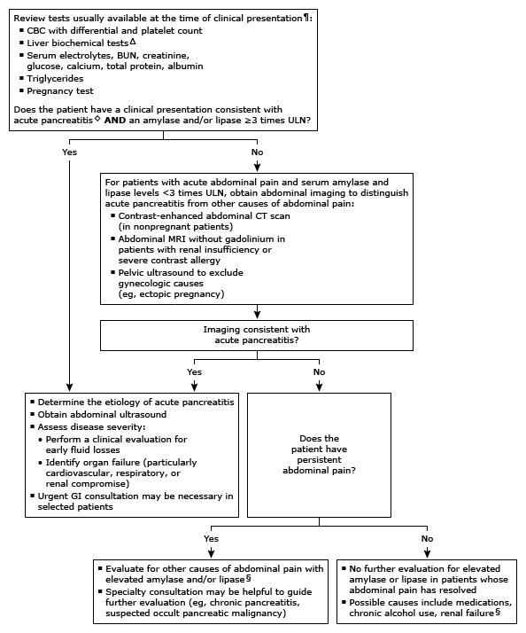

Initial evaluation of high amylase or high lipase in adults*

This algorithm is intended for use with additional UpToDate content on amylase, lipase, and acute pancreatitis.
CBC: complete blood count; BUN: blood urea nitrogen; ULN: upper limit of normal; CT: computed tomography; MRI: magnetic resonance imaging; GI: gastrointestinal. * The reference range for amylase is approximately 25 to 125 units/L. Lipase ranges vary considerably depending on the laboratory. Interpretation of a specific abnormal result should be based on the reference range reported with that result. ¶ While serum amylase and lipase are usually obtained together in patients with abdominal pain to diagnose acute pancreatitis, lipase is more sensitive and persists longer. Δ Liver biochemical tests include alanine aminotransferase (ALT), aspartate aminotransferase (AST), bilirubin, and alkaline phosphatase. ◊ Symptoms consistent with acute pancreatitis include acute onset of persistent, severe epigastric abdominal pain, sometimes radiating to the back, associated with nausea and vomiting. § Refer to UpToDate tables of conditions and drugs associated with high serum amylase and high serum lipase.